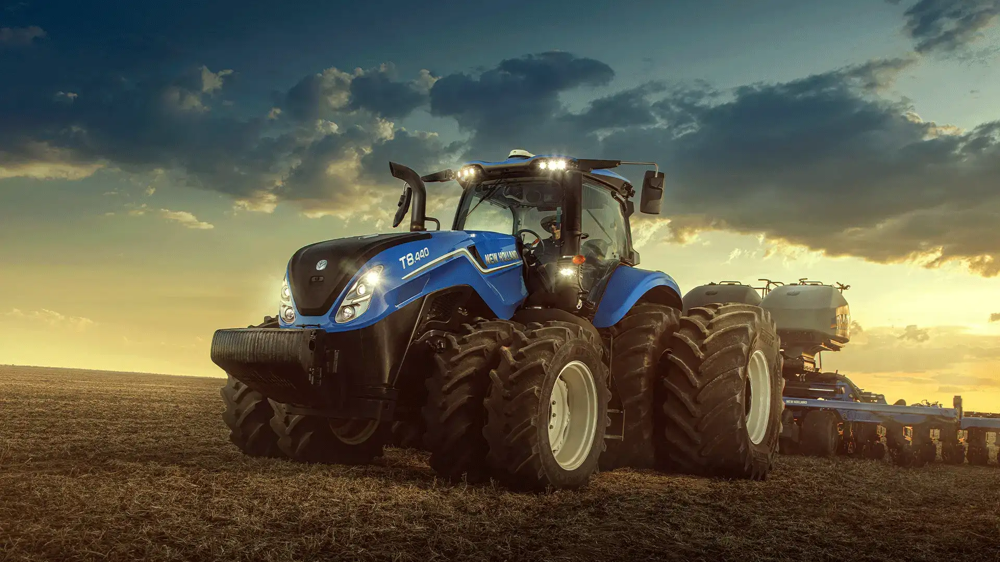

História da New Holland

A New Holland é uma marca tradicional do setor de máquinas agrícolas, conhecida por desenvolver equipamentos destinados a diferentes atividades do agronegócio. Seus tratores são utilizados em propriedades rurais de diferentes tamanhos e em diversas operações agrícolas.
Ao longo dos anos, a marca incorporou novas tecnologias aos seus equipamentos, buscando oferecer mais produtividade, conforto, eficiência e facilidade de operação para os produtores.
Tecnologia nos tratores
Os tratores modernos utilizam diversas tecnologias para melhorar o desempenho das atividades no campo. Entre os recursos encontrados em diferentes linhas de tratores estão sistemas eletrônicos, transmissões modernas e tecnologias de agricultura de precisão.
"A tecnologia agrícola ajuda o produtor a trabalhar com mais eficiência, aproveitando melhor os recursos disponíveis."
Dependendo do modelo e da configuração, os tratores podem contar com recursos que auxiliam o operador durante o trabalho, aumentando a precisão e contribuindo para uma operação mais eficiente.
Principais categorias de tratores
A New Holland possui diferentes categorias de tratores para atender às necessidades de produtores e operações agrícolas.
- Tratores compactos: indicados para pequenas propriedades, horticultura e trabalhos que exigem maior facilidade de movimentação.
- Tratores de médio porte: utilizados em diversas atividades agrícolas e propriedades rurais.
- Tratores de alta potência: desenvolvidos para operações que exigem maior capacidade de trabalho.
- Tratores especializados: destinados a aplicações específicas, dependendo das necessidades da propriedade.
Importância dos tratores para o agronegócio
Os tratores desempenham um papel fundamental na mecanização agrícola. Eles podem ser utilizados em atividades como preparo do solo, plantio, transporte, aplicação de implementos e outras operações.
A mecanização permite realizar determinadas tarefas em menor tempo e com maior capacidade operacional. Por isso, os tratores se tornaram equipamentos importantes para a agricultura moderna.